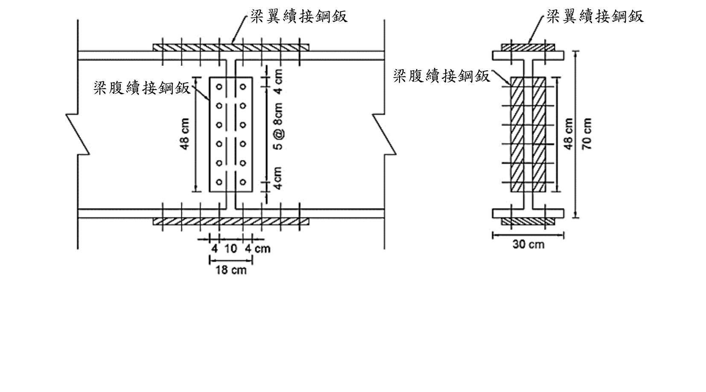
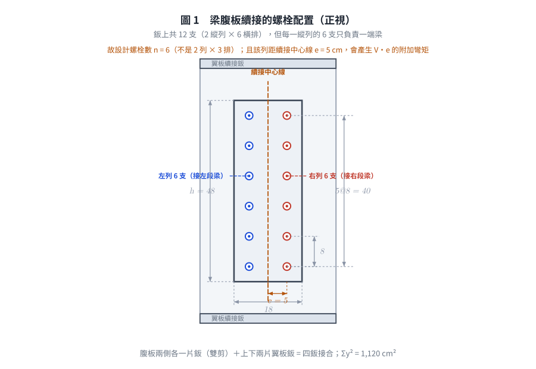
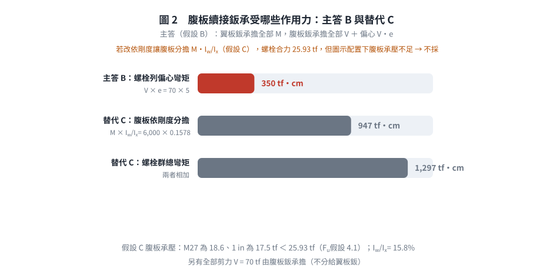
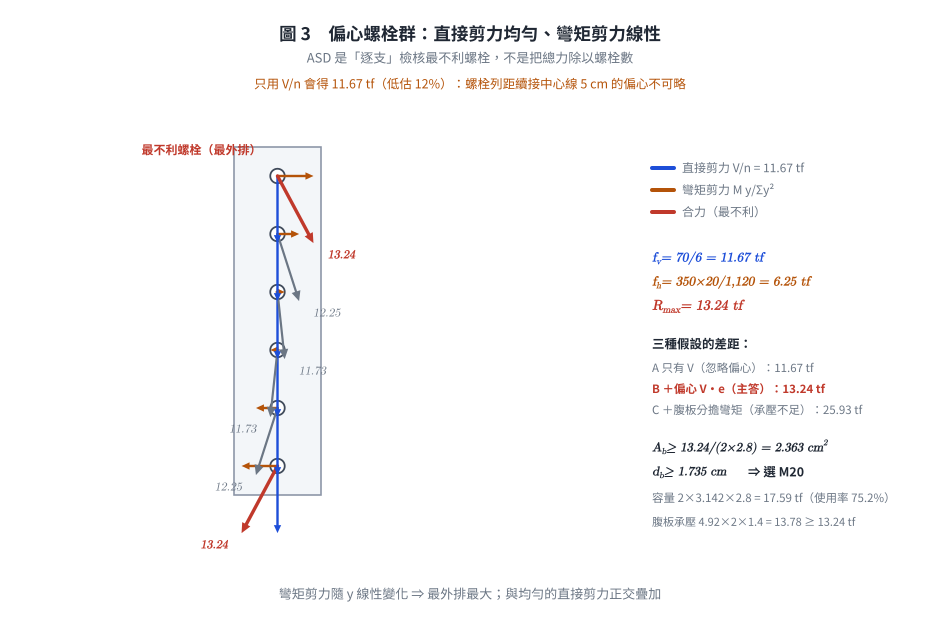
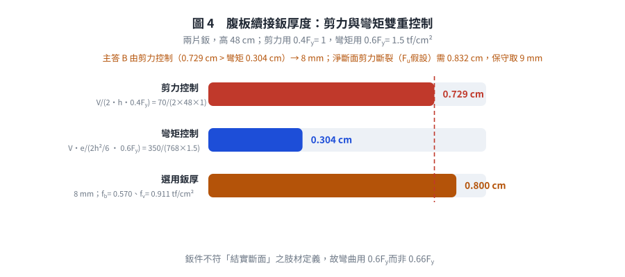

📄 題目正本：考卷原文・附圖・判讀清單（待確認）
SS-2020-4 題目正本
本檔只記錄考卷上寫了什麼、圖上畫了什麼，不含任何解法。解析見同資料夾
SS-2020-4.md。
判讀清單經使用者確認前，狀態為「待確認」；確認後本檔原則上不再修改（改動須回考卷原圖並記 log）。
| 項目 | 內容 |
|---|---|
| 考卷 | raw/exams/SS-2020_鋼結構設計.pdf 第 2 頁（頁次 3－2），第四題 |
| 考年 | 民國 109 年（2020） |
| 配分 | 25 分 |
| 附圖 | 1 張（四鈑接合梁續接立面與斷面），SS-2020-4-fig-1.png |
| 判讀狀態 | 待確認（轉錄 2026-11-02，PyMuPDF 110 dpi 全頁＋附圖 300 dpi 局部目視，盲讀後才比對既有解析） |
1. 考卷原文（逐字）
四、下圖為以四鈑接合之鋼梁續接圖，梁斷面為 H700x300x14x25，材料強度 $F_y$=2.5 tf/cm²，螺栓為 A490 螺栓，容許剪應力 $F_{va}$=2.8 tf/cm²，梁在續接位置承受之 $M_w$=60 tf-m，$V_w$=70 tf，若規範規定：梁續接之接合強度不得小於梁桿件強度之一半，試依容許應力設計規範，設計梁腹鈑續接接合鈑需要之螺栓尺寸及需要之鈑厚。（25分）
2. 考卷給的公式、附表與參數
- 題文：H700×300×14×25；$F_y$ = 2.5 tf/cm²；A490，$F_{va}$ = 2.8 tf/cm²；$M_w$ = 60 tf-m、$V_w$ = 70 tf；接合強度 ≥ 梁強度之一半。
- 圖面：腹板續接鈑高 48、寬 18 cm（4＋10＋4）；螺栓列距 5@8 cm，上下邊距 4 cm；梁高 70、翼寬 30 cm。
- 沒有給承壓容許應力、$F_u$ 與梁強度的定義式。
- 卷首注意事項：㈠可用計算器、㈡不必抄題、㈢除專門名詞或數理公式外應使用本國文字作答。
3. 附圖

圖面文字照錄：梁翼續接鋼鈑；梁腹續接鋼鈑；48 cm；4 cm；5 @ 8cm；4cm；4；10；4 cm；18 cm；梁翼續接鋼鈑；梁腹續接鋼鈑；48 cm；70 cm；30 cm。
4. 判讀清單
「把握」標不確定者請優先確認；解讀類項目（題目用字的意思）另標「解讀」。
| # | 項目 | 判讀 | 圖上／題文依據 | 把握 |
|---|---|---|---|---|
| 1 | 四鈑 | 上下翼板外側各 1 片＋腹板兩側各 1 片 | 斷面圖斜線 | 確定 |
| 2 | 腹板螺栓 | 每側梁 1 縱列 6 支（全鈑 12 支），雙剪 | 立面圖＋腹板兩側各一鈑 | 確定 |
| 3 | 4、10、4 cm | 鈑邊至螺栓列 4 cm、兩縱列相距 10 cm（每列距續接縫 5 cm） | 尺寸線端點（300 dpi） | 確定 |
| 4 | 腹板設計力 | $V_w$ 全由腹板承擔；$M_w$ 依 $I_w/I_x$ 分給腹板；螺栓群偏心 5 cm | 題文＋圖 | 不確定（解讀） |
| 5 | 「強度之一半」 | 設計力取「實際載重」與「梁強度一半」的較大者；梁強度的定義（容許彎矩、剪力）題未給 | 題文 | 不確定（解讀） |
| 6 | 所求 | 螺栓直徑與腹板續接鈑厚度 | 題文 | 確定 |
轉錄：2026-11-02（SS-U1-4 題目正本推廣・批 3）
考題編號：SS-2020-4
主分類： SS-U1-4 接合之分析與設計
副分類： SS-U1-2 梁桿件
設計法： ASD
標籤： 接合設計 腹板續接 四鈑接合 ASD 高強度螺栓 A490螺栓 螺栓尺寸 鈑厚設計 容許剪應力 最小接合強度規定 剪力設計 偏心螺栓群 腹板彎矩分擔 Iw/Ix 腹板承壓 命題原意判斷
1. 原始題目重述 (Problem Restatement)
下圖為以四鈑接合之鋼梁續接圖，梁斷面為 H700×300×14×25，材料強度 $F_y = 2.5$ tf/cm²，螺栓為 A490 螺栓，容許剪應力 $F_{va} = 2.8$ tf/cm²，梁在續接位置承受之 $M_w = 60$ tf·m，$V_w = 70$ tf，若規範規定：梁續接之接合強度不得小於梁桿件強度之一半，試依容許應力設計規範，設計梁腹鈑續接接合鈑需要之螺栓尺寸及需要之鈑厚。（25分）
梁斷面幾何（H700×300×14×25）：
- 總高：$H = 700$ mm → 70 cm
- 翼板寬：$b_f = 300$ mm → 30 cm
- 腹板厚：$t_w = 14$ mm → 1.4 cm
- 翼板厚：$t_f = 25$ mm → 2.5 cm
- 腹板淨高：$h_w = H - 2t_f = 700 - 50 = 650$ mm → 65 cm
圖說（2026-08-22 重新判讀原始試卷確認）：左圖（正視圖）為續接處立面。腹板續接鈑為長方形，高 48 cm、寬 18 cm（= 4 + 10 + 4 cm）；螺栓為 2 縱列 × 6 橫排：兩縱列相距 10 cm、對稱跨越續接中心線（每列距中心線 5 cm），兩側各留 4 cm 邊距；6 橫排間距 5@8 cm = 40 cm，上下各留 4 cm 邊距，故鈑高 4 + 40 + 4 = 48 cm。左列 6 支螺栓接左段梁、右列 6 支螺栓接右段梁，故每側之設計螺栓數為 6 支。上、下另各有一片梁翼板續接鈑（水平條帶）。右圖（斷面視圖）：梁總高 70 cm、上下翼板各 30 cm 寬 × 2.5 cm 厚、腹板 1.4 cm 厚 × 65 cm 高；腹板兩側各一片腹板續接鈑（故螺栓為雙剪）、翼板上下各一片翼板續接鈑——合計 4 片，即題目所稱「四鈑接合」。
🔍 關鍵圖面判讀更正：舊版曾在同一份解析中寫「2 列 × 6 排」又寫「$n$ = 2 列 × 3 排 = 6 個」，前後矛盾。正確理解為：鈑上共 12 支螺栓（2 列 × 6 排），每一縱列的 6 支負責一端梁，故單側設計螺栓數 $n = 6$；且該縱列距續接中心線 $e = 5$ cm，會產生偏心彎矩 $V \cdot e$（舊版完全未計入，見 §4 Step 4）。
2. 考題核心精神與出題者意圖 (Core Concepts & Examiner's Intent)
核心觀念：梁腹板續接設計 —— 最小接合強度規定 + 四鈑分工 + 偏心螺栓群 + 鈑材應力 + 梁腹板承壓
本題測驗四個主軸：
- 設計力的確定：依「接合強度不得小於梁桿件強度之一半」規定，比較 $\max(M_w,\ 0.5M_a)$ 與 $\max(V_w,\ 0.5V_a)$
- 腹板鈑所承擔的作用力：四鈑續接由翼板鈑承擔彎矩 $M$，腹板鈑承擔全部 $V$ 及螺栓列偏離續接中心線 5 cm 所生之 $V\!\cdot\!e$（另一做法「腹板依剛度分擔 $M_w \cdot I_w/I_x$」見 §5 爭議一，在本題配置下梁腹板承壓不足）
- 偏心螺栓群分析：直接剪力（$V/n$，鉛垂）+ 彎矩剪力（$M y_{\max}/\Sigma y^2$，水平）向量疊加
- 鈑厚設計：剪力（$0.4F_y$）與彎矩（$0.6F_y$）雙重控制
出題者考查重點：
- 最小接合強度規定的雙向應用（$M$ 與 $V$ 都要比）
- 由圖面正確判讀「每側 6 支螺栓、雙剪、偏心 5 cm」
- 題目給 $M_w = 60$ tf·m 用於最小接合強度的雙向比較，並由翼板鈑承擔；腹板鈑設計看 $V$ 與偏心 $V\!\cdot\!e$
- 承壓型螺栓須檢核梁腹板承壓（全部螺栓力作用於 14 mm 腹板），這一項決定了主答的取法
- ASD 螺栓雙剪：$2 A_b F_{va} \ge R_{\max}$（逐支檢核最不利螺栓，非總和）
3. 解題戰略地圖與陷阱分析 (Strategic Roadmap & Trap Analysis)
步驟規劃：
1. 斷面性質：$I_x$、$S_x$、$I_w$、$A_w$
2. 最小接合強度：$M_a = 0.66F_yS_x$、$V_a = 0.4F_y d t_w$，各取一半與 $M_w$、$V_w$ 比較
3. 由圖面確定螺栓配置：每側 6 支、雙剪、偏心 $e = 5$ cm、$\Sigma y^2$
4. 腹板鈑承受之彎矩 $M_{\text{bolt}} = V\!\cdot\!e$（翼板鈑承擔 $M$）
5. 最不利螺栓合力 → 所需 $A_b$ → 選定螺栓尺寸 → 梁腹板承壓檢核
6. 鈑厚：剪力控制 + 彎矩控制，取大者
關鍵陷阱：
⚠️ 陷阱1：漏掉偏心彎矩 $V \cdot e$
螺栓列距續接中心線 5 cm，$V = 70$ tf 造成 $350$ tf·cm 的附加彎矩。忽略後最不利螺栓合力由 13.24 tf 低估為 11.67 tf。⚠️ 陷阱2：梁腹板承壓不可除以剪力面數
螺栓夾在兩片續接鈑之間，全部螺栓力都壓在 14 mm 的梁腹板上（兩片鈑各只分一半）。舊版把腹板承壓除以 2 個剪力面，誤判「腹板依剛度分擔彎矩」做法下 M27 通過；實際 18.6 tf ＜ 25.93 tf 不足，見 §5 爭議一。⚠️ 陷阱3：螺栓數目讀錯
鈑上共 12 支（2 列 × 6 排），但每一縱列的 6 支負責一端梁，故設計用 $n = 6$。不可寫成「2 列 × 3 排」。⚠️ 陷阱4：$A_w$ 用 $h_w t_w$ 還是 $d\,t_w$
台灣 ASD 規範剪應力 $f_v = V/(d\,t_w)$ 用全高；部分教科書用 $h_w t_w$。本題兩者之一半（49.0 / 45.5 tf）都小於 $V_w = 70$ tf，結論不變。⚠️ 陷阱5：鈑厚剪力、彎矩都要算
腹板鈑同時受剪與受彎（$V\!\cdot\!e$）。本題主答由剪力控制（0.729 cm > 彎矩 0.304 cm）；若改採腹板分擔彎矩（假設 C）則變為彎矩控制 1.126 cm。⚠️ 陷阱6：ASD 螺栓檢核是「逐支」不是「總和」
偏心群中各螺栓受力不等，必須用最不利（最外排）螺栓之合力除以 $2F_{va}$ 求 $A_b$。
3.5 變數層次分析（Variable Hierarchy Analysis）
複習提示：解題後，在每個卡住的知識點「卡關?」欄標記
⚠；第二次複習時只看有⚠的項目。
最終目標： 確定腹板鈑所受之 $V$ 與總彎矩 → 偏心螺栓群最不利合力 → 選定螺栓尺寸 → 鈑厚（剪力／彎矩雙控）
主要公式（$\boxed{\phantom{x}}$ = 未知，待推導）
Step 1：最小接合強度規定（雙向）
$$M_a = 0.66F_yS_x,\qquad V_a = 0.4F_y\,d\,t_w$$
$$\boxed{M_{\text{des}}} = \max(M_w,\ 0.5M_a),\qquad \boxed{V_{\text{des}}} = \max(V_w,\ 0.5V_a)$$
Step 2：腹板鈑承受之彎矩（翼板鈑承擔 $M_{\text{des}}$）
$$\boxed{M_{\text{bolt}}} = V_{\text{des}}\cdot e$$
Step 3：偏心螺栓群（ASD 雙剪，逐支）
$$f_v = \frac{V_{\text{des}}}{n},\quad f_h = \frac{M_{\text{bolt}}\,y_{\max}}{\sum y^2},\quad \boxed{R_{\max}} = \sqrt{f_v^2 + f_h^2}$$
$$2\boxed{A_b}F_{va} \ge R_{\max} \;\Rightarrow\; \boxed{d_b} = \sqrt{4A_b/\pi},\qquad 1.2F_u\,d_b\,t_w \ge R_{\max}\ (\text{梁腹板承壓})$$
Step 4：鈑厚（兩片，$0.4F_y$ 剪力 / $0.6F_y$ 彎矩）
$$\boxed{t} \ge \max\left(\frac{V_{\text{des}}}{2 h_{pl}(0.4F_y)},\ \frac{M_{\text{bolt}}}{\left(2h_{pl}^2/6\right)(0.6F_y)}\right)$$
L1：題目直接給定
| 符號 | 數值 | 說明 |
|---|---|---|
| 梁斷面 | H700×300×14×25 | $d$=70cm，$b_f$=30cm，$t_w$=1.4cm，$t_f$=2.5cm |
| $F_y$ | 2.5 tf/cm² | 降伏應力 |
| $F_{va}$ | 2.8 tf/cm² | A490 螺栓容許剪應力（= 40 ksi，即螺紋不在剪力面之承壓型，見 §5） |
| $M_w$ | 60 tf·m | 續接位置之工作彎矩（下標 w = working） |
| $V_w$ | 70 tf | 續接位置之工作剪力 |
| 最小強度規定 | 接合強度 $\ge$ 梁桿件強度之 1/2 | $M$ 與 $V$ 皆需比較 |
| 螺栓配置 | 2 縱列 × 6 橫排；每側 6 支 | 雙剪（腹板兩側各一片鈑） |
| 螺栓間距 | 縱向（沿梁高）@8 cm；橫向 10 cm | 端距 4 cm |
| 偏心距 $e$ | 5 cm | 螺栓列至續接中心線 |
| 鈑高 $h_{pl}$ | 48 cm | 4 + 5@8 + 4 = 48 cm |
| 鈑寬 | 18 cm | 4 + 10 + 4 = 18 cm |
L2：需知識點推導
Step 1：斷面性質
| 符號 | 公式 / 來源 | 卡關? |
|---|---|---|
| $h_w$ | $d - 2t_f = 70 - 5 = 65$ cm | |
| $I_x$ | $\dfrac{b_f d^3 - (b_f-t_w)h_w^3}{12} = \dfrac{30(70^3) - 28.6(65^3)}{12} = 202{,}977$ cm⁴ | |
| $S_x$ | $I_x/(d/2) = 202977/35 = 5{,}799$ cm³ | |
| $I_w$ | $t_w h_w^3/12 = 1.4(65^3)/12 = 32{,}040$ cm⁴ | |
| $I_w/I_x$ | $0.1578$（腹板僅分擔 15.8% 彎矩） |
Step 2：最小接合強度規定
| 符號 | 公式 / 來源 | 卡關? |
|---|---|---|
| 斷面分類 | 翼板 $b_f/2t_f = 6.0 < 17/\sqrt{F_y} = 10.75$；腹板 $h_w/t_w = 46.4 < 170/\sqrt{F_y} = 107.5$ → 結實斷面 | |
| $M_a$ | $0.66 F_y S_x = 1.65 \times 5799 = 9{,}569$ tf·cm $= 95.7$ tf·m | |
| $0.5M_a$ | 47.8 tf·m $< M_w = 60$ tf·m → $M_w$ 控制 | |
| $V_a$ | $0.4F_y d t_w = 0.4(2.5)(70)(1.4) = 98$ tf | |
| $0.5V_a$ | 49.0 tf $< V_w = 70$ tf → $V_w$ 控制 |
Step 3：腹板鈑承受之作用力
| 符號 | 公式 / 來源 | 卡關? |
|---|---|---|
| $M_{\text{web}}$ | 主答由翼板鈑承擔 $M$，腹板鈑不分擔（假設 C 為 947 tf·cm，見 §5） | |
| $V\!\cdot\!e$ | $70 \times 5 = 350$ tf·cm | |
| $M_{\text{bolt}}$ | $V\!\cdot\!e = 350$ tf·cm | |
| $\sum y^2$ | $2(4^2 + 12^2 + 20^2) = 1{,}120$ cm² |
Step 4：螺栓尺寸
| 符號 | 公式 / 來源 | 卡關? |
|---|---|---|
| $f_v$ | $70/6 = 11.67$ tf（鉛垂） | |
| $f_h$ | $350 \times 20/1120 = 6.25$ tf（水平） | |
| $R_{\max}$ | $\sqrt{11.67^2 + 6.25^2} = 13.24$ tf | |
| $A_b$ | $\ge 13.24/(2 \times 2.8) = 2.364$ cm² | |
| $d_b$ | $\ge \sqrt{4(2.364)/\pi} = 1.735$ cm | |
| 選用 | M20（$d = 2.0$ cm，$A_b = 3.142$ cm²）；容量 $2(3.142)(2.8) = 17.59 > 13.24$ ✓ | |
| 梁腹板承壓 | $1.2F_u d t_w = 4.92(2.0)(1.4) = 13.78 \ge 13.24$ tf ✓（$F_u$ 假設 4.1） | ⚠ |
| 間距檢核 | $8 > 3d = 6.0$ cm ✓；端距 $4 > 1.25d = 2.5$ cm ✓ |
Step 5：鈑厚
| 符號 | 公式 / 來源 | 卡關? |
|---|---|---|
| 剪力控制 | $t \ge 70/[2(48)(0.4 \times 2.5)] = 0.729$ cm ← 控制 | |
| 彎矩控制 | $S = 2(48^2/6)t = 768t$；$t \ge 350/(768 \times 1.5) = 0.304$ cm | |
| 選用 | $t = 8$ mm；驗算 $f_v = 0.911 < 1.0$ ✓，$f_b = 0.570 < 1.5$ ✓（淨斷面剪力斷裂另需 9 mm，見 §5） |
L3：深層知識（不懂就卡住）
| 知識點 | 說明 | 卡關? |
|---|---|---|
| 最小接合強度規定 | 接合強度不得小於梁桿件強度之一半；$M$ 與 $V$ 都要比。實際作用力偏小時此規定控制 | |
| 四鈑續接之力量分配 | 主答：翼板鈑承擔 $M$；腹板鈑承擔全部 $V$ + 偏心 $V\!\cdot\!e$。另一做法依剛度令腹板分擔 $M \cdot I_w/I_x$（AISC Manual Part 12），本題配置下梁腹板承壓不足 | |
| 梁腹板承壓 | 雙剪螺栓夾在兩片鈑之間，全部螺栓力壓在梁腹板（$t_w$ = 14 mm）上，比兩片鈑合計 16 mm 薄 → 腹板控制承壓；不可除以剪力面數 | |
| 螺栓群偏心 $e$ | 螺栓列至續接中心線之距離；ASD 續接必計，是最常被忽略的項 | |
| 偏心螺栓群向量法 | $f_v = V/n$（均勻）+ $f_h = My/\Sigma y^2$（線性），正交疊加；逐支檢核最不利者 | |
| 雙剪（double shear） | 四鈑接合腹板兩側各一片鈑，每支螺栓有 2 個剪力面；容量 $= 2A_bF_{va}$ | |
| 鈑材 $0.4F_y$ / $0.6F_y$ | 剪力容許應力 $0.4F_y$、彎曲容許應力 $0.6F_y$（鈑件非結實斷面，不用 0.66） | |
| $A_w = d\,t_w$（ASD） | 台灣 ASD 規範 $f_v = V/(d t_w)$ 用全高；LRFD 則常用 $(d-2t_f)t_w$ |
4. 步驟化詳細計算過程 (Step-by-Step Detailed Calculation)
Step 1：斷面幾何與斷面性質
$$h_w = d - 2t_f = 70 - 2(2.5) = 65 \text{ cm}$$
$$I_x = \frac{b_f d^3 - (b_f - t_w)h_w^3}{12} = \frac{30(343{,}000) - 28.6(274{,}625)}{12} = \frac{10{,}290{,}000 - 7{,}854{,}275}{12} = \boxed{202{,}977 \text{ cm}^4}$$
$$S_x = \frac{I_x}{d/2} = \frac{202{,}977}{35} = 5{,}799 \text{ cm}^3$$
$$I_w = \frac{t_w h_w^3}{12} = \frac{1.4 \times 274{,}625}{12} = 32{,}040 \text{ cm}^4 \qquad \frac{I_w}{I_x} = \frac{32{,}040}{202{,}977} = 0.1578$$
$$A_g = 2(30)(2.5) + 65(1.4) = 150 + 91 = 241 \text{ cm}^2$$
斷面分類（確認可用 $0.66F_y$）：
$$\frac{b_f}{2t_f} = \frac{30}{5} = 6.0 \;<\; \frac{17}{\sqrt{F_y}} = \frac{17}{\sqrt{2.5}} = 10.75 \;\checkmark \qquad \frac{h_w}{t_w} = \frac{65}{1.4} = 46.4 \;<\; \frac{170}{\sqrt{2.5}} = 107.5 \;\checkmark$$
⇒ 結實斷面（compact），$F_b = 0.66F_y$
Step 2：最小接合強度規定（$M$ 與 $V$ 雙向檢查）
規範規定：「梁續接之接合強度不得小於梁桿件強度之一半」——彎矩與剪力都要比。
(a) 彎矩
$$M_a = F_b S_x = 0.66(2.5)(5{,}799) = 1.65 \times 5{,}799 = 9{,}569 \text{ tf}\cdot\text{cm} = 95.7 \text{ tf}\cdot\text{m}$$
$$0.5 M_a = 47.8 \text{ tf}\cdot\text{m} \;<\; M_w = 60 \text{ tf}\cdot\text{m} \;\Rightarrow\; M_{\text{des}} = \boxed{60 \text{ tf}\cdot\text{m}}$$
(b) 剪力
$$V_a = 0.4 F_y \, d \, t_w = 0.4(2.5)(70)(1.4) = \boxed{98 \text{ tf}}$$
$$0.5 V_a = 49.0 \text{ tf} \;<\; V_w = 70 \text{ tf} \;\Rightarrow\; V_{\text{des}} = \boxed{70 \text{ tf}}$$
若改採 $A_w = h_w t_w = 91$ cm²：$V_a = 91$ tf，$0.5V_a = 45.5$ tf，仍 $< 70$ tf，結論不變。
⇒ 本題實際作用力（60 tf·m、70 tf）皆大於桿件強度之一半，最小強度規定不控制設計。
Step 3：螺栓配置（讀取圖面）
| 項目 | 數值 |
|---|---|
| 縱列數（跨越續接線） | 2 列（左列接左段梁、右列接右段梁），列間距 10 cm |
| 每列螺栓數（沿梁高） | 6 支，間距 5@8 = 40 cm |
| 上下邊距 | 各 4 cm ⇒ 鈑高 $h_{pl} = 4 + 40 + 4 = 48$ cm |
| 左右邊距 | 各 4 cm ⇒ 鈑寬 $= 4 + 10 + 4 = 18$ cm |
| 設計螺栓數 $n$ | 6 支（單側） |
| 偏心距 $e$ | 5 cm（螺栓列至續接中心線） |
| 剪力面數 | 2（腹板兩側各一片鈑 ⇒ 雙剪） |
螺栓縱座標（以鈑中高為原點）： $y = \pm 4,\ \pm 12,\ \pm 20$ cm
$$\sum y^2 = 2\left(4^2 + 12^2 + 20^2\right) = 2(16 + 144 + 400) = \boxed{1{,}120 \text{ cm}^2}$$

圖 1 螺栓配置。鈑上雖有 12 支，但每一縱列的 6 支只負責一端梁，故設計螺栓數 $n = 6$；這張圖同時攔下「2 列 × 3 排」的誤讀，以及忽略該列距續接中心線 $e = 5$ cm 所生的附加彎矩。
Step 4：腹板續接鈑所承受之作用力
四鈑續接之分工（主答）：
$$\underbrace{\text{翼板鈑}}_{\text{承擔彎矩 } M} \qquad\qquad \underbrace{\text{腹板鈑}}_{\text{承擔全部 } V \;+\; \text{偏心 } V\!\cdot\!e}$$
(a) 螺栓列偏心所生之彎矩（腹板鈑承擔）
$$M_{\text{bolt}} = V_{\text{des}} \times e = 70 \times 5 = \boxed{350 \text{ tf}\cdot\text{cm}}$$
(b) 梁彎矩 $M_{\text{des}} = 6{,}000$ tf·cm 由翼板鈑承擔（翼板鈑力 $\approx M/(d - t_f) = 6000/67.5 = 88.9$ tf，屬翼板鈑設計，本題未問）
📌 為什麼不讓腹板依剛度分擔 $M \cdot I_w/I_x = 947$ tf·cm？ 那是另一種常見做法（假設 C），但在本題給定的螺栓配置下，最不利螺栓合力 25.93 tf 會超過梁腹板承壓容量（M27：18.6 tf；1 in：17.5 tf），配置本身不成立；改採本做法則 M20 的腹板承壓 13.78 tf 恰好 ≥ 13.24 tf。判斷理由與兩種做法比較見 §5 爭議一。

圖 2 腹板續接鈑承受哪些作用力。主答（假設 B）只有偏心彎矩 $V\!\cdot\!e$ = 350 tf·cm；若改依剛度分擔（假設 C）總彎矩變 1,297 tf·cm，但在圖示螺栓配置下腹板承壓不足，故不採。
Step 5：最不利螺栓之合力與螺栓尺寸
直接剪力（均勻分配，鉛垂）：
$$f_v = \frac{V_{\text{des}}}{n} = \frac{70}{6} = 11.67 \text{ tf}$$
彎矩剪力（線性分配，水平；最外排 $y_{\max} = 20$ cm）：
$$f_h = \frac{M_{\text{bolt}} \cdot y_{\max}}{\sum y^2} = \frac{350 \times 20}{1{,}120} = 6.25 \text{ tf}$$
向量合成（兩者正交）：
$$R_{\max} = \sqrt{f_v^2 + f_h^2} = \sqrt{11.67^2 + 6.25^2} = \sqrt{136.1 + 39.1} = \boxed{13.24 \text{ tf}}$$
所需螺栓截面積（雙剪）：
$$2 A_b F_{va} \ge R_{\max} \;\Rightarrow\; A_b \ge \frac{13.24}{2 \times 2.8} = \boxed{2.364 \text{ cm}^2}$$
$$d_b \ge \sqrt{\frac{4 \times 2.364}{\pi}} = 1.735 \text{ cm} = 17.4 \text{ mm}$$
選用 M20（$d = 20$ mm，A490 等級）：
$$A_b = \frac{\pi (2.0)^2}{4} = 3.142 \text{ cm}^2 \;>\; 2.364 \;\checkmark$$
$$\text{容量} = 2 \times 3.142 \times 2.8 = 17.59 \text{ tf} \;>\; 13.24 \text{ tf} \;\checkmark \quad(\text{使用率 } 75.2\%)$$
（M16 之 $A_b = 2.011$ cm² < 2.364 不足；英制 3/4 in 之 2.850 cm² 剪力足夠，但腹板承壓 13.12 tf < 13.24 tf 略不足）
梁腹板承壓（決定性檢核）： 螺栓夾在兩片續接鈑之間，全部螺栓力 $R_{\max}$ 都作用於梁腹板（$t_w$ = 1.4 cm）；兩片續接鈑各只承受一半。$F_u$ 題目未給，取 A36 之 4.1 tf/cm²（假設）：
$$R_p = 1.2F_u\,d\,t_w = 4.92 \times 2.0 \times 1.4 = \boxed{13.78 \text{ tf}} \;\ge\; R_{\max} = 13.24 \text{ tf} \;\checkmark$$
續接鈑（每片承受 $R_{\max}/2 = 6.62$ tf）：$4.92 \times 2.0 \times 0.8 = 7.87$ tf ✓
間距與端距檢核（$d = 2.0$ cm）：
| 項目 | 圖面值 | 規範下限 | 判定 |
|---|---|---|---|
| 螺栓中心距（沿梁高） | 8 cm | $3d = 6.0$ cm；絕對下限 $\frac{8}{3}d = 5.33$ cm | ✓ |
| 螺栓中心距（橫向） | 10 cm | 同上 | ✓ |
| 端距 | 4 cm | $\approx 1.25d = 2.5$ cm | ✓ |
$$\boxed{\text{選用 M20 A490 級螺栓，每側 6 支，雙剪}}$$

圖 3 直接剪力均勻、彎矩剪力線性，兩者正交疊加。ASD 是逐支檢核最不利螺栓；這張圖攔的是忽略偏心 $V\!\cdot\!e$（只用 $V/n$ 得 11.67 tf，低估 12%），並附上腹板承壓 13.78 ≥ 13.24 tf 的決定性檢核。
Step 6：腹板續接鈑厚度
腹板鈑為兩片（腹板兩側各一），高 $h_{pl} = 48$ cm，須同時滿足剪力與彎矩：
(a) 剪力控制（$F_v = 0.4F_y = 1.0$ tf/cm²）
$$f_v = \frac{V_{\text{des}}}{2 h_{pl} t} \le 0.4F_y \;\Rightarrow\; t \ge \frac{70}{2(48)(1.0)} = \boxed{0.729 \text{ cm}} \;\leftarrow \textbf{控制}$$
(b) 彎矩控制（$F_b = 0.6F_y = 1.5$ tf/cm²）
兩片鈑之斷面模數：$\displaystyle S = 2 \times \frac{t\,h_{pl}^2}{6} = 768\,t \text{ cm}^3$
$$f_b = \frac{M_{\text{bolt}}}{S} = \frac{350}{768\,t} \le 1.5 \;\Rightarrow\; t \ge \frac{350}{768 \times 1.5} = 0.304 \text{ cm}$$
(c) 選用 $t = 8$ mm（0.8 cm）並驗算
| 項目 | 計算 | 容許 | 判定 |
|---|---|---|---|
| $f_v$ | $70/[2(48)(0.8)] = 0.911$ tf/cm² | $0.4F_y = 1.0$ | ✓（91.1%） |
| $f_b$ | $350/(768 \times 0.8) = 0.570$ tf/cm² | $0.6F_y = 1.5$ | ✓（38.0%） |
$$\boxed{\text{腹板續接鈑厚度 } t = 8 \text{ mm（兩片，各 } 48 \times 18 \times 8 \text{ mm）}}$$
（補充：若一併檢核淨斷面剪力斷裂（$F_u$ 假設 4.1，孔徑 2.3 cm），需 $t \ge 0.832$ cm ⇒ 9 mm；保守設計可取 9 mm，詳 §5 爭議三。）

圖 4 主答由剪力控制（0.729 cm > 彎矩 0.304 cm）→ 8 mm；淨斷面剪力斷裂（$F_u$ 假設）需 0.832 cm，保守取 9 mm。鈑件不符結實斷面之肢材定義，故彎曲用 $0.6F_y$ 而非 $0.66F_y$。
計算彙整
| 項目 | 數值 |
|---|---|
| $I_x$ / $S_x$ | 202,977 cm⁴ / 5,799 cm³ |
| $I_w$ / $(I_w/I_x)$ | 32,040 cm⁴ / 0.1578 |
| $M_a$（桿件） / $0.5M_a$ | 95.7 / 47.8 tf·m |
| $V_a$（桿件） / $0.5V_a$ | 98 / 49.0 tf |
| 設計彎矩 $M_{\text{des}}$ | 60 tf·m（實際作用力控制；由翼板鈑承擔） |
| 設計剪力 $V_{\text{des}}$ | 70 tf（實際作用力控制；由腹板鈑承擔） |
| 腹板鈑彎矩 $M_{\text{bolt}} = V\!\cdot\!e$ | 350 tf·cm |
| 螺栓配置 | 2 列 × 6 排；每側 6 支，雙剪，$e = 5$ cm |
| $\sum y^2$ | 1,120 cm² |
| 最不利螺栓合力 $R_{\max}$ | 13.24 tf（$f_v = 11.67$、$f_h = 6.25$） |
| 所需 $A_b$ / $d_b$ | ≥ 2.364 cm² / ≥ 17.4 mm |
| 選用螺栓 | M20 A490 級，$A_b = 3.142$ cm²（使用率 75.2%） |
| 梁腹板承壓 | 13.78 tf ≥ 13.24 tf（$F_u$ 假設 4.1） |
| 所需鈑厚（剪力 / 彎矩） | 0.729 cm / 0.304 cm |
| 選用鈑厚 | 8 mm（淨斷面剪力斷裂另需 9 mm） |
5. 關鍵爭議點與進階探討 (Critical Issues & Advanced Discussion)
爭議一（2026-11-01 更正主答）：腹板鈑到底承受哪些作用力？
三種假設層次及其結果：
| 假設 | 螺栓群彎矩 | $f_h$ | $R_{\max}$ | 所需 $A_b$ | 螺栓 | 梁腹板承壓 | 鈑厚 |
|---|---|---|---|---|---|---|---|
| A 僅 $V$，忽略偏心 | 0 | 0 | 11.67 tf | 2.083 cm² | M20 | 13.78 ✓ | 8 mm |
| B $V$ + 偏心 $V\!\cdot\!e$（本文主答） | 350 tf·cm | 6.25 tf | 13.24 tf | 2.364 cm² | M20 | 13.78 ≥ 13.24 ✓ | 8 mm |
| C $V$ + $V\!\cdot\!e$ + 腹板依剛度分擔 $M I_w/I_x$ | 1,297 tf·cm | 23.16 tf | 25.93 tf | 4.631 cm² | M27（或 1 in） | 18.6（1 in 17.5）＜ 25.93 ✗ | 12 mm |
⚠️ 本文採 B 為主答，理由：
1. 假設 C 在題目給定的螺栓配置下不成立：全部螺栓力作用於 14 mm 梁腹板，M27 承壓 $1.2F_u d t_w = 4.92 \times 2.7 \times 1.4 = 18.6$ tf、英制 1 in 為 17.5 tf，都小於 25.93 tf；要通過需更多螺栓或更大配置，與圖面不符。（舊版把腹板承壓除以 2 個剪力面，誤判通過。）
2. 假設 B 下圖面數字全部吻合：M20 腹板承壓 13.78 tf 恰好 ≥ 13.24 tf；間距 8 cm ≥ $3d$ = 6 cm、端距 4 cm ≥ $1.25d$ = 2.5 cm；公制 M20 為標準規格，A490 的英制／公制爭議也消失。
3. 四鈑續接的常見分工：翼板鈑承擔彎矩、腹板鈑承擔剪力（含螺栓群偏心）。題目給 $M_w$ = 60 tf·m，是為了套「接合強度不得小於梁桿件強度之一半」的雙向比較，彎矩由翼板鈑承擔。
4. 假設 A 忽略偏心在物理上不成立（螺栓列確實偏離續接線 5 cm），但結果同為 M20＋8 mm。需說明的不確定性：①$F_u$ 題目未給，承壓判斷以 A36 之 $F_u$ = 4.1 tf/cm² 為假設；②「命題原意為 B」是由數字吻合程度推論，命題者並未明說。依剛度分擔（假設 C）在物理上較完整，AISC Manual Part 12 亦列為做法之一，若考場採 C 須同時處理腹板承壓不足（例如增加螺栓數或改用摩阻型以免承壓控制）。
考場策略：寫 B（M20＋8 mm）並附腹板承壓檢核；旁註「若腹板依剛度分擔彎矩，$R_{\max}$ = 25.93 tf，但給定配置下腹板承壓不足」。
爭議二：$F_{va} = 2.8$ tf/cm² 對應哪一種 A490？
由台灣 ASD 規範第十章表 C10.3-2（螺栓容許剪應力）換算：
| 螺栓／狀態 | 容許剪應力 |
|---|---|
| A325 摩阻型（標準孔） | 17 ksi = 1.196 tf/cm² |
| A490 摩阻型（標準孔） | 21 ksi = 1.476 tf/cm² |
| A490-N 承壓型（螺紋在剪力面） | 28 ksi = 1.968 tf/cm² |
| A490-X 承壓型（螺紋不在剪力面） | 40 ksi = 2.812 tf/cm² |
$$F_{va} = 2.8 \text{ tf/cm}^2 \;\approx\; 40 \text{ ksi} \;\Rightarrow\; \boxed{\text{A490-X，承壓型接合，螺紋不在剪力面}}$$
設計意涵：既然是承壓型（非摩阻型），本題不需檢核滑動，但應檢核孔壁承壓（見爭議三）。同時，「螺紋不在剪力面」要求螺栓長度與夾持厚度配合得當，須在施工圖上明確標註。
爭議三：補充檢核（題目未問，但實務必要）
(a) 孔壁承壓（$d = 2.0$ cm；$F_u$ 未給，設 $F_u = 4.1$ tf/cm²）
台灣 ASD 式(10.3-1a)：$F_p = 1.2F_u = 4.92$ tf/cm²
- 梁腹板（$t_w = 1.4$ cm，承受全部螺栓力）：$R = 4.92 \times 2.0 \times 1.4 = 13.78$ tf $\ge R_{\max} = 13.24$ tf ✓（餘裕 4%）
- 續接鈑（$t = 0.8$ cm，每片承受一半）：$R = 4.92 \times 2.0 \times 0.8 = 7.87$ tf $\ge 13.24/2 = 6.62$ tf ✓
舊版寫「腹板 18.6 tf > 25.93/2（每剪力面 12.97 tf）」是錯的：梁腹板是夾在中間的板，兩個剪力面的力都由它承壓，不可除以 2。
(b) 續接鈑淨斷面剪力（一列 6 孔，孔徑取 $d + 3$ mm = 2.3 cm）
$$h_{net} = 48 - 6 \times 2.3 = 34.2 \text{ cm}$$
$$f_v = \frac{70}{2(34.2)(0.8)} = 1.279 \text{ tf/cm}^2 \;>\; 0.3F_u = 1.23 \;\Rightarrow\; t \ge \frac{70}{2(34.2)(1.23)} = 0.832 \text{ cm}$$
以假設之 $F_u$ 檢核淨斷面剪力斷裂，8 mm 略不足（超 4%），保守設計取 9 mm（$f_v$ = 1.137 ≤ 1.23 ✓）。題目未給 $F_u$，主答仍依題意之 $0.4F_y$ 剪力設計取 8 mm，並註明此項。
(c) 續接鈑淨斷面彎曲
$$I_{net}\big|_{\text{兩片}} = 2t\left[\frac{48^3}{12} - 2.3\sum y^2 - \frac{6(2.3)^3}{12}\right] = 2t\left[9{,}216 - 2{,}576 - 6\right] = 13{,}268\,t$$
$$S_{net} = \frac{13{,}268\,t}{24} = 552.8\,t \;\Rightarrow\; f_b = \frac{350}{552.8 \times 0.8} = 0.79 \text{ tf/cm}^2 \le 0.5F_u = 2.05 \;\checkmark$$
爭議四：最小接合強度規定在什麼情況下才會控制？
本題 $M_w = 60 > 0.5M_a = 47.8$、$V_w = 70 > 0.5V_a = 49.0$，故不控制。臨界點：
$$M_w < 47.8 \text{ tf}\cdot\text{m} \quad\text{或}\quad V_w < 49.0 \text{ tf}$$
例如若 $V_w = 30$ tf、$M_w = 30$ tf·m，則須改以 $M = 47.8$ tf·m（翼板鈑）、$V = 49.0$ tf（腹板鈑）設計：
$$M_{\text{bolt}} = 49 \times 5 = 245 \text{ tf}\cdot\text{cm},\quad f_h = 4.38,\ f_v = 8.17$$
$$R_{\max} = 9.26 \text{ tf} \;\Rightarrow\; A_b \ge 1.654 \text{ cm}^2 \;\Rightarrow\; \text{M16（2.01 cm²）即足}$$
此規定之目的：防止接合成為結構中的「弱鏈」。續接位置的內力受分析假設、載重重分配與地震影響甚大，若接合僅按名目內力設計，一旦內力超出預期便可能發生非韌性破壞。
爭議五：鈑厚之「彎矩」為何用 $0.6F_y$ 而非 $0.66F_y$？
$0.66F_y$ 適用於結實斷面之型鋼繞強軸受彎且有側撐。續接鈑為單片矩形鈑，不符「結實斷面」之翼板／腹板肢材定義，故採 $F_b = 0.6F_y$（一般容許彎曲應力）。本題主答由剪力控制，彎矩需求僅 0.304 cm，此差異不影響結論；在假設 C 下才會是控制項（1.126 vs 1.024 cm，仍取 12 mm）。
6. 依最新規範（AISC 360-16／-22）對照
本題主答案所依規範：內政部「鋼構造建築物鋼結構設計技術規範」民國 99 年（2010）修正版之鋼結構容許應力設計法（題目明示「試依容許應力設計規範」）。以下對照 AISC 360-16／-22。
6.1 ASD 哲學的根本改變：容許應力法 → 強度法除以 $\Omega$
| 項目 | 台灣 2010 ASD（＝AISC ASD-89） | AISC 360-16／-22 ASD |
|---|---|---|
| 基本形式 | $f \le F_{\text{allow}}$（應力比較） | $R_a \le R_n/\Omega$（強度比較） |
| 剪力 | $f_v = V/(d t_w) \le 0.4F_y$ | $V_n = 0.6F_y A_w C_{v1}$，$\Omega = 1.67$ |
| 彎矩 | $f_b \le 0.66F_y$（結實） | $M_n = M_p = F_y Z_x$，$\Omega = 1.67$ |
| 螺栓剪力 | 查表 $F_{va}$（A490-X = 40 ksi） | $F_{nv} = 0.563F_u^b$（X）／$0.450F_u^b$（N），$\Omega = 2.00$ |
梁桿件強度之一半（作為對照）：
| 項目 | 台灣 ASD | AISC 360-16 ASD |
|---|---|---|
| $M$ 容量 | $0.66F_yS_x = 95.7$ tf·m | $F_yZ_x/1.67$；$Z_x = b_ft_f(d-t_f) + t_wh_w^2/4 = 5062.5 + 1478.8 = 6{,}541$ cm³ ⇒ $\dfrac{2.5 \times 6541}{1.67} = 97.9$ tf·m |
| $V$ 容量 | $0.4F_y d t_w = 98$ tf | 組合斷面 $\Omega_v = 1.67$：$\dfrac{0.6(2.5)(98)}{1.67} = 88.0$ tf （若為軋製 I 型且 $h/t_w = 46.4 \le 2.24\sqrt{E/F_y} = 64.0$，則 $\Omega_v = 1.50$ ⇒ 98.0 tf，與台灣完全相同） |
| 一半 | 47.8 / 49.0 | 49.0 / 44.0（或 49.0，$\Omega_v = 1.50$） |
兩套規範之桿件容量僅差 ±10%，最小強度規定仍不控制（$M_w = 60 > 49.0$、$V_w = 70 > 44.0$）。
6.2 螺栓剪力強度：查表 → 公式
AISC 360-16 表 J3.2：A490 之 $F_u^b = 150$ ksi
$$F_{nv}(\text{X}) = 0.563 \times 150 = 84.4 \text{ ksi} \;\Rightarrow\; \frac{F_{nv}}{\Omega} = \frac{84.4}{2.00} = 42.2 \text{ ksi} = 2.97 \text{ tf/cm}^2$$
比題目給定之 $F_{va} = 2.8$ tf/cm²（40 ksi）高 6%。若採 AISC 360-16：
$$A_b \ge \frac{13.24}{2 \times 2.97} = 2.229 \text{ cm}^2 \;\Rightarrow\; \text{仍需 M20（M16 之 2.011 cm² 不足）}$$
兩套規範皆選 M20。
6.3 承壓 vs 撕出：360-22 拆為兩個極限狀態
| 規範 | 條文 | 形式 |
|---|---|---|
| 台灣 2010 ASD | 式 (10.3-1a)～(10.3-1c) | $F_p = 1.2F_u$；端螺栓 $F_p = L F_u/(2d) \le 1.2F_u$ |
| AISC 360-16 | §J3.10 | 合併：$R_n = 1.2L_c t F_u \le 2.4 d t F_u$ |
| AISC 360-22 | §J3.11 承壓 + §J3.12 撕出 | 分列為兩個獨立極限狀態 |
360-22 的拆分是概念釐清（撕出屬剪力破壞、承壓屬壓陷變形），計算結果與 -16 之合併式相同。本題兩者皆通過。
6.4 螺栓間距規定
| 項目 | 台灣 2010 §10.3.9 | AISC 360-16／-22 §J3.3 |
|---|---|---|
| 一般下限 | $\dfrac{8}{3}d$（$= 5.33$ cm，M20） | $2\dfrac{2}{3}d$（相同） |
| 沿力方向（$F_p$ 由式 10.3-1a/b 計得時） | $3d$（$= 6.0$ cm，M20） | $3d$ 為「建議值（preferred）」 |
| 本題圖面 8 cm | ✓ 兩者皆滿足 | ✓ |
6.5 續接設計方法：AISC Manual Part 12
AISC 手冊 Part 12「Beam and Girder Splices」對腹板續接之規定（本文主答取其中「翼板鈑承擔全部 $M$」之保守分工，即假設 B）：
- 腹板鈑承擔全部剪力 $V$
- 腹板鈑承擔依剛度分擔之彎矩 $M \cdot I_w/I_x$（或保守地令翼板鈑承擔全部 $M$）
- 另加螺栓群偏心彎矩 $V \cdot e$
- 螺栓群以彈性向量法（或瞬心法）分析
- 續接鈑須檢核：全斷面／淨斷面剪力、彎曲、以及塊狀撕裂
其中第 5 項的塊狀撕裂在台灣 ASD 規範第十章 10.4 節亦有（$F_v = 0.30F_u$ 於剪力淨斷面、$F_t = 0.50F_u$ 於張力淨斷面），本題因 $F_u$ 未給而未量化。
6.6 對照總表
| 項目 | 台灣 2010 ASD（本文主答案） | AISC 360-16／-22 |
|---|---|---|
| 設計彎矩／剪力 | 60 tf·m / 70 tf | 同（最小強度規定皆不控制） |
| 螺栓容許剪應力 | 2.8 tf/cm²（40 ksi，題給） | $0.563F_u^b/2.00 = 2.97$ tf/cm² |
| 最不利螺栓合力 | 13.24 tf | 同（分析法相同） |
| 選用螺栓 | M20（A490 級） | M20 |
| 選用鈑厚 | 8 mm（淨斷面剪力斷裂另需 9 mm） | 8 mm（淨斷面剪力斷裂另需約 9 mm） |
| 承壓／撕出 | 合併於 $F_p$ | -16 合併；-22 分列 |
| 螺栓間距下限 | $8/3\,d$；沿力方向 $3d$ | $2\frac{2}{3}d$；$3d$ 為建議值 |
修正日期：2026-08-22
本次修正內容：①以 300 dpi 影像重新判讀試卷附圖，釐清螺栓配置為「2 縱列 × 6 橫排，每一縱列 6 支負責一端梁」，更正舊版「$n$ = 2 列 × 3 排 = 6 個」之矛盾敘述（舊版 L1 表寫「2 列 × 6 排」、Step 3 寫「2 列 × 3 排」，前後不一致）；②補入舊版完全遺漏的兩項作用力：螺栓列偏離續接中心線 $e = 5$ cm 所生之 $V\!\cdot\!e = 350$ tf·cm，以及腹板依剛度分擔之彎矩 $M_w \cdot I_w/I_x = 947$ tf·cm，螺栓群總彎矩 $M_{\text{bolt}} = 1{,}297$ tf·cm；最不利螺栓合力由 11.67 → 25.93 tf，所需 $A_b$ 由 2.083 → 4.631 cm²，螺栓由 M20 → D25；③鈑厚增列彎矩控制（$0.6F_y$），由剪力控制之 0.729 cm 改為彎矩控制之 1.126 cm，鈑厚由 8 mm → 12 mm；④更正 $I_x$：202,898 → 202,977 cm⁴（重算）；⑤最小接合強度規定改為 $M$、$V$ 雙向檢查（原僅查 $V$），並補入 $A_w = d\,t_w$（台灣 ASD）與 $h_w t_w$ 兩種取法之對照；⑥補入斷面分類（確認結實）、$F_{va} = 2.8$ tf/cm² = 40 ksi = A490-X 之查證、間距／端距檢核、孔壁承壓與淨斷面補充檢核；⑦於 §5 爭議一以表列出假設 A/B/C 三層次之答案差異（M20+8mm vs D25+12mm）並說明選 C 之理由與保留意見；⑧新增 §6 依最新規範對照。
圖解補繪：2026-08-29（向量圖 4 張，腳本 gen_SS-2020-4.py，改輸入可原地重跑；SVG 供 wiki／PDF，2× PNG 供 pptx／影片）
修正日期：2026-11-01（盲解抽樣發現：原選「D25」不屬公制高強度螺栓系列（M20／22／24／27），M24 之 4.524 cm² < 需求 4.631 cm²，改選 M27（$A_b$ 5.726 cm²、容量 32.06 tf、使用率 80.9%），並註明英制 A490 1 in（5.067 cm²）亦可；同步孔徑 3.0 cm、承壓 18.6／15.9 tf、續接鈑淨斷面剪應力 0.972 tf/cm²、間距檢核（8 cm 滿足 $8d/3 = 7.2$ cm 下限，略小於建議值 $3d = 8.1$ cm）與 §6 對照；圖 3 與 gen_SS-2020-4.py 同步）
修正日期：2026-11-01（第三次；使用者決定：主答由假設 C「腹板依剛度分擔彎矩，M27＋12 mm」改為假設 B「翼板鈑承擔 $M$、腹板鈑承擔 $V$＋偏心 $V\!\cdot\!e$」：$R_{\max}$ 25.93 → 13.24 tf、所需 $A_b$ 4.631 → 2.364 cm²、螺栓 M27 → M20、鈑厚 12 → 8 mm（剪力控制 0.729 cm；淨斷面剪力斷裂另需 9 mm）。主因：補做梁腹板承壓（全部螺栓力作用於 14 mm 腹板，$F_u$ 假設 4.1），假設 C 下 M27 為 18.6 tf、1 in 為 17.5 tf，均小於 25.93 tf，與圖示配置不符；假設 B 下 M20 為 13.78 ≥ 13.24 tf。舊版爭議三把腹板承壓除以 2 個剪力面，一併更正。命題原意屬推論，§5 爭議一並列三種做法。圖 2～4 與 gen_SS-2020-4.py 同步重繪）
驗證狀態：unverified